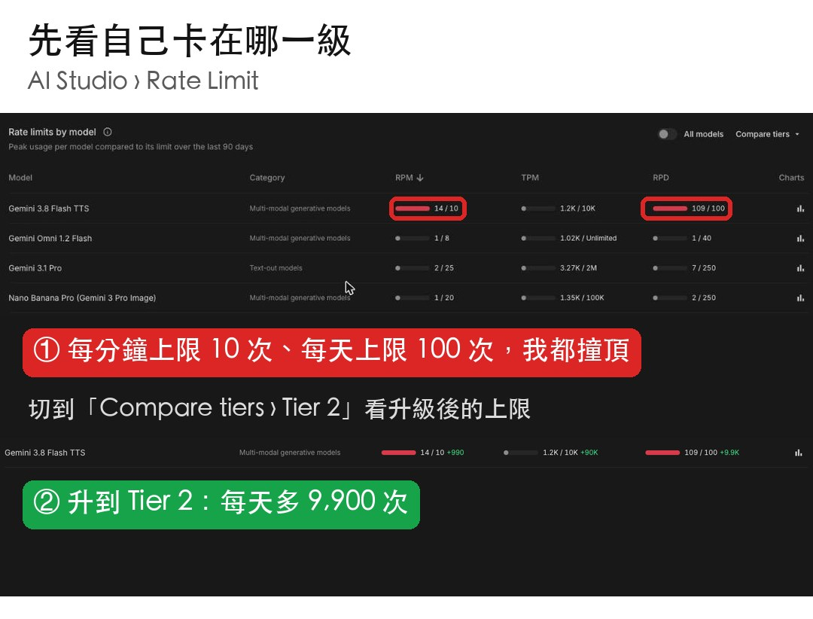
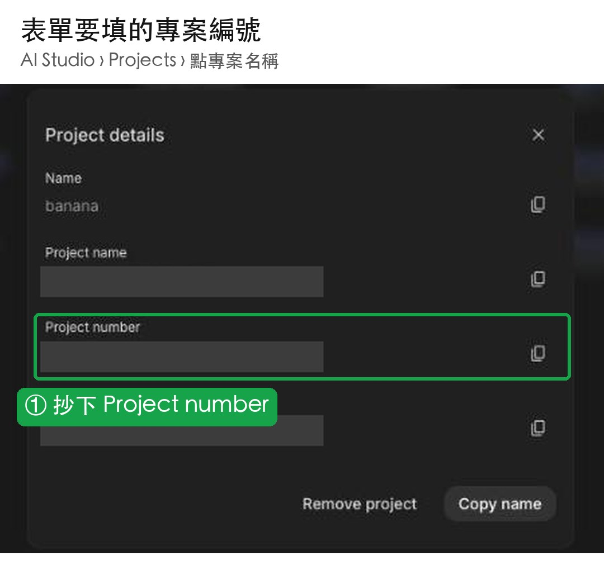
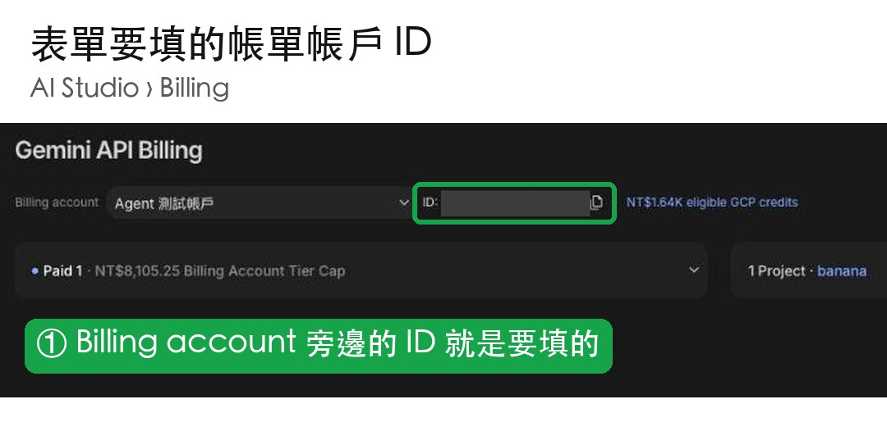
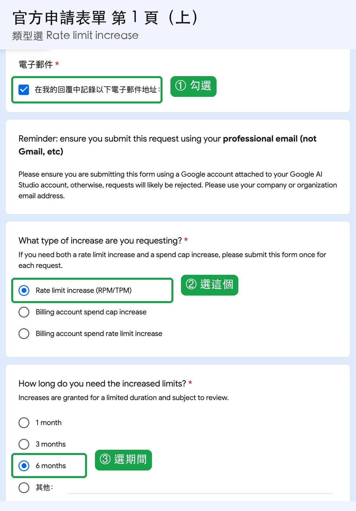
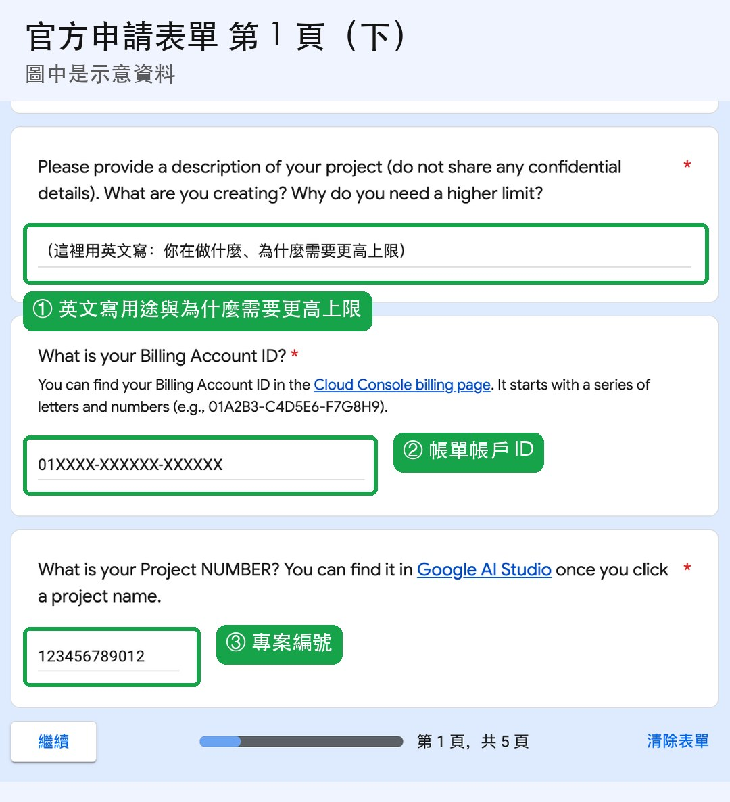
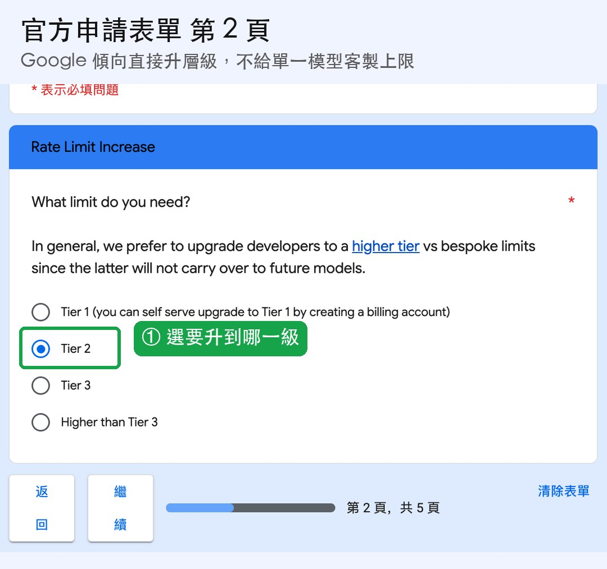

這篇在講什麼
用 Gemini API 做配音，錄到一半突然停掉，多半是撞到速率上限。付費第一級的 Gemini 3.8 Flash TTS 每分鐘只能 10 次、每天只能 100 次，而且上限算在專案頭上，多開金鑰、訂 Google AI Pro 都不會變多。這篇用我自己的帳號實測畫面，講清楚上限怎麼看、怎麼升級、怎麼送官方表單申請調高，以及等核准之前配音腳本可以先怎麼改。
- 用 Gemini API 幫影片配音，常常錄到一半卡住，或看到 429、RESOURCE_EXHAUSTED（超過速率上限的錯誤訊息）的人
- 有訂 Google AI Pro，以為 API 也跟著升級，結果還是被擋的人
- 想一句一句重錄、邊校稿邊修，卻一直被額度打斷的人
- 在 AI Studio 找到自己專案目前的層級與 TTS 上限
- 官方調高申請表單要準備的兩個號碼、各在哪裡找
- 一段可以直接貼給 AI、讓它幫你改配音腳本的提示詞

為什麼 Gemini TTS 錄到一半就停：上限有兩條
Gemini API 的速率上限有三種單位：每分鐘請求數（RPM）、每分鐘 token 數（TPM）、每天請求數（RPD）。配音最容易撞到的是第一種和第三種，因為配音腳本通常是一句送一次，一句就算一次請求。請求次數跟句子長短無關，句子長短影響的是 token 數（AI 計算文字量的單位）。
這裡說的「專案」，是你在 Google AI Studio 建立 API 金鑰時，金鑰所屬的那個專案。每個專案有自己的層級，層級越高上限越多。我的專案在付費第一級（Tier 1），Gemini 3.8 Flash TTS 的上限長這樣：
| 上限 | 付費第一級 Tier 1（我現在） | 付費第二級 Tier 2 | 我過去 90 天的最高用量 |
|---|---|---|---|
| 每分鐘請求數 RPM | 10 次 | 1,000 次 | 14 次（超過上限） |
| 每分鐘 token 數 TPM | 1 萬 | 10 萬 | 約 1,200，遠低於上限 |
| 每天請求數 RPD | 100 次 | 10,000 次 | 109 次（超過上限） |
頁面記錄的最高用量比上限還高，那幾天我確實一直被擋、出現 429。
所以卡住有兩種。一種是一分鐘內送太快，等一分鐘就好；另一種是一天的 100 次用完，要等到隔天重置。重錄幾句、改幾次稿，100 次很快就沒了。
多開 API 金鑰、訂 Google AI Pro，上限都不會變多
我一開始以為兩件事可以解：再開一把金鑰，或者我已經有付費訂閱。查完官方文件，兩個都不行。
| 以為可以 | 實際上 |
|---|---|
| 同一個專案多開幾把 API 金鑰 | 上限綁在整個專案頭上，同一個專案底下的金鑰共用同一份額度。 |
| 有訂 Google AI Pro | Google AI Pro 是 Gemini App 與 AI Studio 網頁介面的訂閱，跟 API 的層級是兩本帳。API 上限只看專案連結的帳單帳戶在哪一級。 |
| 另開一個新專案 | 新專案有自己的額度，但我用的自訂聲音是建立在原本專案底下的，官方文件寫自訂聲音以專案為單位，沒寫可以跨專案使用。換專案等於聲音要重做。 |
- 想用自己的聲音做 AI 配音，該選哪個？：這一段只講額度，那篇比較五種聲音克隆做法，包含 Gemini。
- API key 可以貼給 AI 嗎？：要開金鑰、換金鑰之前，那篇講金鑰存在 Mac 鑰匙圈、讓程式自己去拿。
Gemini API 升到第二級（Tier 2）要什麼條件
官方文件寫的升級條件如下，升級是系統自動判斷，不用另外申請：
| 層級 | 條件 |
|---|---|
| 付費第一級 Tier 1 | 專案連結一個有效的帳單帳戶 |
| 付費第二級 Tier 2 | 累積付款 100 美元（照我帳單頁的匯率約台幣 3,200 元），而且距離第一次成功付款滿 3 天 |
| 付費第三級 Tier 3 | 累積付款 1,000 美元，而且距離第一次成功付款滿 30 天 |
不先花錢的路：Gemini API 官方調高申請表單
Google 在速率上限的官方文件頁上，放了一份給付費層級用的申請表單「Gemini API Quota and Billing Cap Increase Request」，可以針對單一模型申請調高。逐案審核，不保證核准，核准了才會聯絡你。
填表要準備兩個號碼：


表單第一頁填信箱、要調高的項目、需要多久、帳單帳戶 ID、專案編號，第二頁直接選想升到哪一級：



我送出時寫了什麼
我申請的是調高每分鐘與每天的請求數，期限選 6 個月，層級選第二級。說明欄用英文寫了三件事：我的用途（一句一句生成教學影片旁白，校稿時要能單句重錄）、實際用量（90 天內單日最高 109 次、單分鐘最高 14 次，token 用量很小），以及具體要多少（每天 100 次調到 1,000 次、每分鐘 10 次調到 30 次，token 上限不用動）。
寫具體數字的用意是讓審核的人一眼看懂要多少、為什麼要，比只寫「請提高上限」好判斷。
申請調高之前，Gemini TTS 配音腳本先改三件事
額度要等 Google，腳本是自己能改的。我原本的配音腳本，一句失敗只等 5 秒、重試 3 次就整支停掉，下次又從第一句重錄，等於把剩下的額度再燒一次。要改的是這三件事：
每分鐘上限 10 次，平均下來一次要隔 6 秒，只要同時只有這一支腳本在跑，照這個速度送就不會撞到每分鐘的上限。
每天的額度用完之後一直重試，只會一直失敗。收到 429 就停下來，告訴我台灣時間幾點可以再錄。
記下哪幾句已經錄好，下次只錄沒錄好的，不從頭重來。
另外一個做法不用改程式：校稿時先把要改的句子全部記下來，最後一整批重錄一次，不要改一句錄一句。
下面這段可以直接貼給 Claude、ChatGPT 或 Codex，讓它幫你改自己的配音腳本：
- Cloudflare 免費方案夠用嗎？：同樣是「總量夠、卻卡在單次上限」的問題，那篇講的是 Cloudflare 的每輪呼叫數。
Gemini API 每天的額度幾點重置
每天的請求數在美國太平洋時間午夜重置，換成台灣時間：
| 期間 | 台灣時間重置點 |
|---|---|
| 美國冬令時間（約 11 月初到隔年 3 月初） | 下午 4 點 |
| 美國夏令時間（約 3 月初到 11 月初） | 下午 3 點 |
我之前有一次晚上連續被擋了兩個小時，隔天下午 4 點過幾分鐘，第一次送就成功了。所以如果是每天的 100 次用完，晚上再怎麼重試都不會過，等到下午那個時間點就好。每分鐘的上限從送出請求那一刻往後算 60 秒，等一分鐘就能再送。
- gpt-image-2.5 生一張圖多少錢？：同樣是按用量付費的 API，那篇把生圖的帳單攤開算。
查證來源：Google AI for Developers〈Rate limits〉與〈Pricing〉官方文件、作者本人 Google AI Studio 的 Rate Limit 與 Billing 頁面（2026 年 11 月 17 日查看）。速率上限與升級條件 Google 可能調整，以 AI Studio 上看到的為準。